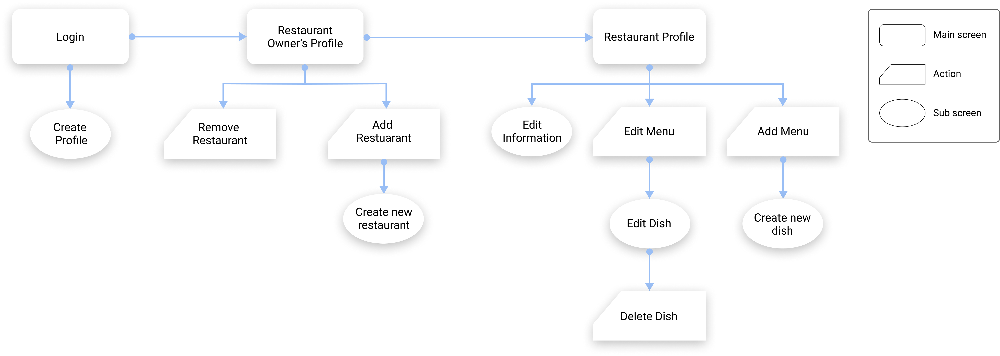
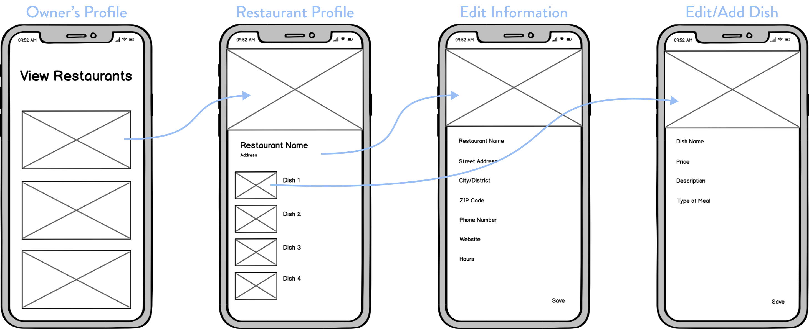
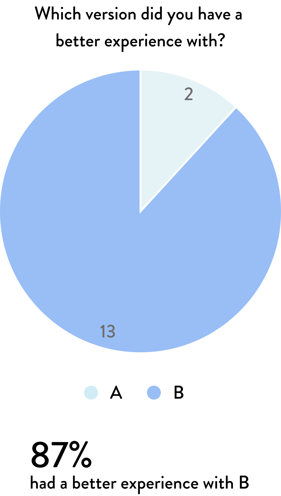

|
RoleUX Designer |
Project typeSelf-designing the flow of the app with constent feedback |
DurationJan 2020 - Present |
ToolsFigma, Illustrator |
|
RoleUX Designer |
Project typeSelf-designing the flow of the app with constent feedback |
DurationJan 2020 - Present |
ToolsFigma, Illustrator |
Owners don’t yet have a way to make their restaurant profiles
The current app is for users who are exploring restaurants. However, there isn’t a system where the restaurant owners can upload their menu and edit their restaurant profile. This is crucial for the app because without this function, the app in unusable. With most of the owners not being too familiar with technology, there had a be an interface that is very easy to understand.
Create a separate app focused for the owners
A separate app had to be made for owners to manage their restaurant profiles. With the target group not being tech savvy, I was in charge of designing a user friendly interface for the app and keep it as simple and straight forward as possible.
Determining the user flow
With no current app, I had to design from scratch. After gathering all the neccesary information needed, the first step I took was planning.
Through planning, I was able to determine how I wanted the app to be layed out. It allowed a smooth transition towards wireframing and low-fidelity prototyping.
Flow of the main screens
The main purpose of this app was to allow the owners to create and edit their menus. With this in mind, the edit menu screen had to have all the necessary information to allow the owners to create or edit it.
Version 1 editing/adding dish

Version 1 was designed such that the editable function for the chosen dish would expand and the user would be able to quickly edit all the information.
After some user testing, it was proven that the editable function is difficult to see and use with its compact space.

Instead of expanding the existing page, I wanted version 2 to allow the user more space to edit and add their dish. This thought resulted in designing a contextual, spacious menu that slides up from the bottom.
With improved whitespace, this version gives off a refreshing look.
User testing on both versions
To grasp a deeper understanding of which version users prefered, I conducted a quick user testing survey to get feedback on their opinions of the two.

Exploring colours

It showed clear distinction between all elements. However, with an inc black colour, it created a drastic contrast which caused a bit unease on the eyes.
“The contrast between the white and black is too much for the eyes”
“Looks like Hinge"
With a pastel blue colour, it gave this screen a clean and refreshing look. It was easy on the eyes and complimented each card well.
“It looks clean but something feels missing”
“Still looks a bit like Hinge"

#948787
Determined to make it not look like Hinge, I gave a secondary colour of #948787 in hopes that it’ll give it a completely new look.
“The two colours compliment each other well”
“The two colours definitely helps get rid of the Hinge theme”